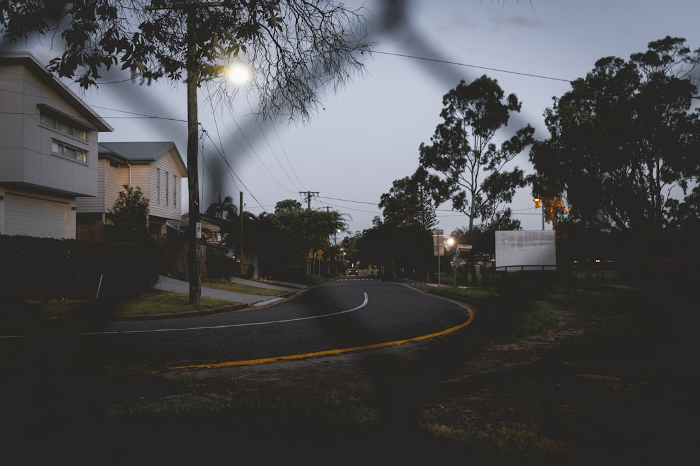

A snapped torsion spring is the most common reason a Brisbane garage door stops working. Indicative 2026 pricing for a spring replacement runs $220 to $450, plus a standard service call-out of $120 to $200. Most single-spring jobs are finished in one to two hours once a technician is on site. Any electrical work on a powered opener must be done by a licensed electrician under the Queensland Electrical Safety Act 2002.
A snapped torsion spring is the most common reason a Brisbane garage door stops working. See Southside Garage Door Connect for the current service details.
Garage Door Spring Repairs Brisbane Explained
A torsion spring carries the full weight of a sectional or roller door, winding and unwinding thousands of times a year. Metal fatigue eventually snaps it, usually with a loud bang, and the door will not lift or only opens a few centimetres before stalling. Warning signs before a full break include a door that feels heavier than usual, a visible gap in the spring coil, or a cable that looks frayed.
Springs are under high tension and are not a safe DIY fix. Ignoring the early signs risks the door dropping suddenly, which is why most technicians treat a snapped spring as urgent work. Southside Garage Door Connect coordinates qualified technicians across Brisbane's southside who handle torsion spring, lifting cable and roller replacement work, and provide a written fixed-price quote before starting any repair.
- Loud bang followed by a door that will not lift
- Door opens partway then stalls or reverses
- Visible gap or slack in the spring coil
- Frayed or fraying lifting cable
What a spring replacement actually costs
Indicative Brisbane pricing for 2026 puts a standard service call-out at $120 to $200, a torsion spring replacement at $220 to $450, and a lifting cable replacement at $180 to $320. A track roller replacement typically sits between $160 and $300, while a full opener or motor replacement runs $600 to $1,100. These figures are indicative only, not a quote, and do not bind any technician.
Actual pricing depends on the door type and size, the condition of the existing hardware, the opener brand and how easy the garage is to access. Booking a technician who explains labour and parts separately makes it easier to compare quotes for garage door spring repairs across different suburbs.
Same-day repair: what's realistic
Many standard jobs, including a broken spring, a faulty opener or a door that has come off its track, are finished in one to two hours once a technician is on site. That timeframe assumes the parts needed are common stock items; an unusual door size or a discontinued opener model can add a return visit.
Emergency call-outs for a door that will not secure are generally prioritised, since an open garage is a security and safety issue. Availability can tighten across southside suburbs like Mount Gravatt, Carindale and Sunnybank.
Electrical work and licensing
Most spring, cable and roller repairs are mechanical and do not involve mains wiring. Where a powered opener needs electrical work, such as rewiring a circuit or replacing hardwired components, that part of the job must be carried out by a licensed electrician under the Queensland Electrical Safety Act 2002. A technician handling the mechanical side may need a licensed electrician for that portion of the work.
It is worth asking upfront whether a quote already accounts for any electrical component, since combining a mechanical repair with electrical work can affect both the price and the timeframe. Confirming licensing for any trade is standard practice; bodies such as the Housing Industry Association publish general guidance on engaging licensed tradespeople for home repair work.
Choosing a technician in Brisbane's southside suburbs
Coverage across the inner south, eastern southside and Mount Gravatt corridor includes Tarragindi, Camp Hill, Holland Park, Coorparoo, Carindale, Mount Gravatt, Wishart, Sunnybank, Greenslopes and surrounding suburbs. Before booking, it helps to ask a few direct questions: does the quote cover parts and labour, is the spring sized for the specific door, and what warranty applies to the new spring and installation.
The general process is straightforward: describe the fault and the door type, get matched with a technician covering the suburb, then approve a written fixed-price quote before any work starts. That sequence keeps pricing transparent and avoids surprises once the job is underway.
- Describe the fault. Note the door type and what's happening (won't lift, off track, opener not responding) plus your suburb.
- Get matched with a technician. A qualified garage door technician covering your part of Brisbane's southside is lined up to respond.
- Approve a fixed-price quote. The technician inspects the door, explains the fix and provides a written fixed-price quote before work begins.
| Repair | Indicative range |
|---|---|
| Service call-out / standard service | $120 - $200 |
| Torsion spring replacement | $220 - $450 |
| Lifting cable replacement | $180 - $320 |
| Track roller replacement | $160 - $300 |
| Opener / motor replacement | $600 - $1,100 |
| New sectional door (single, supplied and installed) | $2,500 - $5,000 |
Common questions
How much does a garage door spring repair cost in Brisbane? Indicative 2026 pricing for a torsion spring replacement is $220 to $450, plus a standard service call-out of $120 to $200. The final price depends on door size, hardware condition and site access, confirmed in a written fixed-price quote.
Can a broken garage door spring be fixed the same day? Many spring replacements are completed in one to two hours once a technician is on site, and emergency call-outs for a door that will not secure are generally treated as priority jobs.
Does electrical work on the opener need a licensed electrician? Yes. Any mains electrical work on a powered opener must be carried out by a licensed electrician under the Queensland Electrical Safety Act 2002, separate from the mechanical spring or cable repair.
This guide covers garage door spring repair pricing, timeframes, licensing requirements and technician selection across Brisbane's southside suburbs.